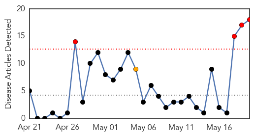
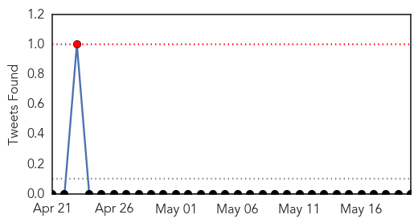
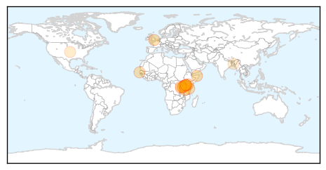
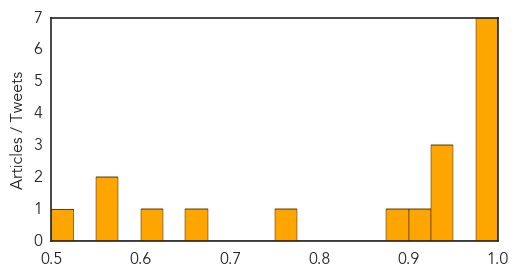

Toggle navigation
Early Warning
Daily Alerts
Cholera
May 20, 2015
Compare to:
-
Dengue Fever
Hemmorhagic Fever
Mold/Fungal Infection
Influenza
Meningitis
Pertussis / Whooping Cough
Middle East Respiratory Syndrome
Hepatitis
Chikungunya
Yellow Fever
Bubonic Plague
West Nile Virus
Swine Flu
Ebola
Measles
Unknown
Mumps
30 Day Trends
Web: 4
alerts
, 1
warnings
Twitter: 1
alerts
, 0
warnings
Top Articles:
0.999
65 Kenyans succumbed to cholera: Health Ministry
0.996
Kenya confirms 65 deaths from cholera outbreak
0.994
The most from the coast
0.987
Cholera death toll rises to 65 as Nakuru, city worst affected - Kenya
0.985
Kenya confirms 65 deaths from cholera outbreak
0.980
Two die, 30 hospitalized after cholera outbreak in Kenyan prison - Xinhua
0.979
Two die, 30 hospitalized after cholera outbreak in Kenyan prison
0.942
Kenya: Cholera death toll rises to 65 as Nakuru, city worst affected
0.928
As cholera confirmed among Burnundian refugees in Tanzania, Oxfam delivers water and sanitation to reduce spread of disease
0.927
As cholera confirmed among Burnundian refugees in Tanzania, Oxfam delivers water and sanitation to reduce spread of disease
0.923
As cholera confirmed among Burnundian refugees in Tanzania Oxfam delivers water and sanitation to reduce spread of disease
0.900
Pastor Caught With N609m Hard Drugs At Lagos Airport
0.769
Sudan: 20 Cases Of Cholera Confirmed Among Burundian Refugees In Tanzani
0.654
Govt, UNHCR say Burundian refugees face no epidemic risk - The New Times
0.613
3 Reasons the Government Should Not Ban Bottled Water Sales Because of Global Warming
0.564
Study reveals intestinal bacteria succession during recovery from cholera in Bangladesh
0.556
As cholera confirmed among Burnundian refugees in Tanzania, Oxfam delivers water and sanitation to reduce spread of disease
0.524
Học qua tin tức: Tình cảnh khốn cùng của người tị nạn Burundi
Top Tweets:
No tweets found for May 20, 2015
Web/News Articles

Tweets

Article Locations

Article Confidences
